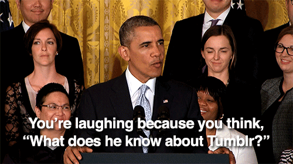

Since 2015, I’ve helped Precision Strategies tackle challenges for nonprofits, political campaigns, Fortune 50’s, and Silicon Valley startups.
We’ve helped influencers organize around trans rights:

Laverne Cox promoting #StandWithGavin in support of Gavin Grimm.
And helped a presidential candidate shout out One Direction:
The boys are right. We need everyone's help to get the planet moving in the right direction. http://t.co/rNQSBSmgJ8 #action1D
— Hillary Clinton (@HillaryClinton) July 9, 2015
From 2011 to 2015, I worked in the Obama White House’s Office of Digital Strategy.
I created the White House’s first-ever Tumblr (back when that was cool); created hundreds of GIFs; helped develop social across Facebook and Twitter; and even helped lead live events through Reddit, Google+, and Tumblr.
I helped write this:
Bo, stop trying to make fetch happen. pic.twitter.com/Ez6hWGFpFc
— White House Archived (@ObamaWhiteHouse) August 13, 2013
And created this GIF series, which is still getting shared on Tumblr:

And because the White House hosts world-class concerts (and we had the distribution rights to the recordings), I started our SoundCloud and shared some of the best: